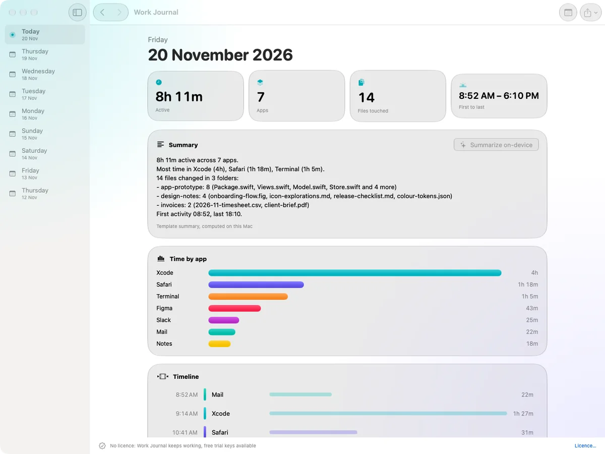
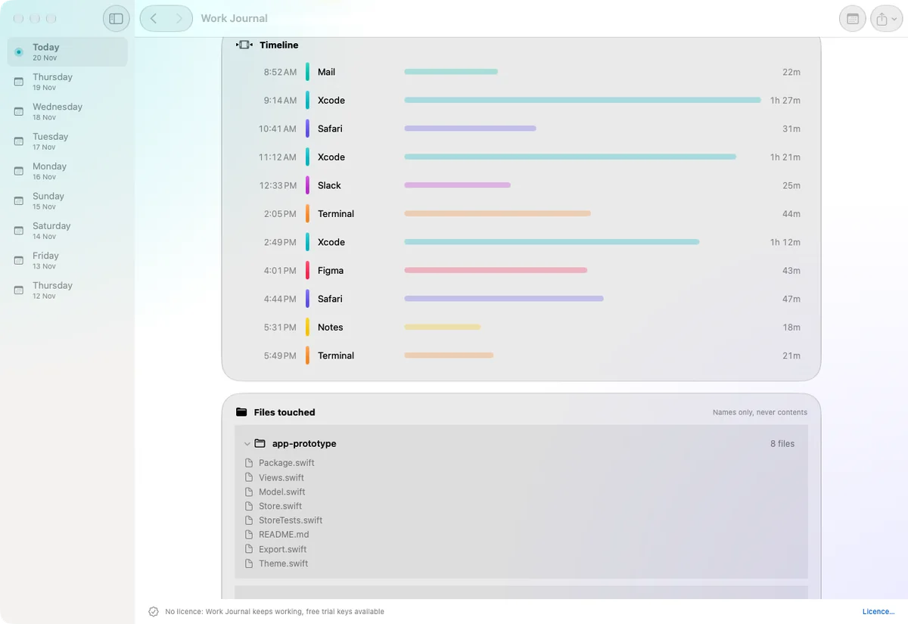
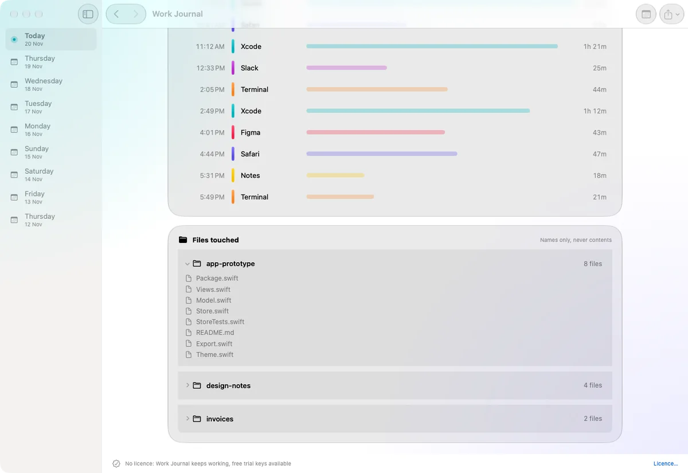

Zyvor · on-device work log
Work Journal
A quiet log of your workday.
Stays on this Mac. Work Journal notes which app is in front and which files change in the folders you choose, then turns the day into a timeline, a summary, a timesheet or a standup note. Encrypted on your Mac, sandboxed, with no network entitlement at all.
Download the 30-day trialLearn more
macOS 27 or later · notarized · Free 30-day trial key: sales@zyvor.dev

Know where the day went. Tell no one.
No screen recording, no window titles, no file contents, no network entitlement. Just a quiet record you can turn into a timesheet in a click.
Features
The day
Your day, at a glance.
Active time, apps and files touched, a summary of the day and time per app. Step through days with Command-[ and Command-].
How it works
Timeline
Every switch, in order.
Each app session with its start time and duration. Sleep, lock, the screen saver and five idle minutes end a session, so time away is not counted as work.

Files
What you touched, never what it said.
File names in the folders you pick, grouped by folder. Build output, .git and other noise is ignored, and the contents of your files are never read.
Privacy and verification
And the rest of the notebook.
Summaries on your Mac
A template summary is always available. With Apple's on-device model on your Mac, Summarize on-device rewrites the same facts in plain sentences, and the window says which one you are reading.
Standup and timesheet exports
Markdown for a standup note, a timesheet CSV with one row per app session, and a files CSV. This day or the last 7 days.
Pause, keep, forget
Pause recording from the menu bar, keep days for 30 days, 90 days, a year or forever, and delete the whole journal in one step.
Native to macOS 27
Liquid Glass surfaces, a sidebar of days, keyboard shortcuts, and it honours Reduce Motion and Reduce Transparency.
Checkable privacy.
No network entitlement
Sandboxed and shipped without com.apple.security.network.client, so it cannot connect. One codesign command shows it.
Encrypted day files
AES-256-GCM, with the key only in your Keychain. No key file.
Only what it says
App name and time, file names in folders you chose. No screen recording, window titles, keystrokes or file contents.
Specs and requirements.
- Requires
- macOS 27 or later
- Build
- Signed and notarizedDeveloper ID signed and notarized by Apple, so it opens without a Gatekeeper prompt.
- Version
- 0.1.1Free 30-day trial key: sales@zyvor.dev
- Storage
- AES-256-GCMOne file per day; the key lives only in the Keychain.
- Sandbox
- No network entitlementFolder access only through the macOS picker.
- Summaries
- On-deviceApple's Foundation Models on click, or a template.
- Exports
- Markdown, CSVStandup note, timesheet and files.
Honest limits
Work Journal records which app is in front, not what you do inside it: no window titles or URLs. File activity is limited to the folders you choose. This is an early release: beyond its automated self-tests, the interface click-through, the folder picker, launch at login, VoiceOver and a clean-Mac install have not been tested by us. Apple's on-device model is used only on Macs where it is available.
Get started in three steps.
Download
Get
WorkJournal-0.1.1.dmgfrom the release page. The SHA-256 is in the release notes and inWorkJournal-0.1.1.dmg.sha256.Install
Open the DMG and drag Work Journal to Applications. It requires macOS 27 or later and lives in the menu bar.
Choose folders, get a trial key
Add folders under Settings if you want file activity. Write to sales@zyvor.dev for a free 30-day trial key; it works without one.
Work Journal 0.1.1 for Mac · SHA-256
cc71cf0a9fcb1d184faec85e3d912e3d4a444675e35f1388909453c6b8488c69Verify: echo "cc71cf0a9fcb1d184faec85e3d912e3d4a444675e35f1388909453c6b8488c69 WorkJournal-0.1.1.dmg" | shasum -a 256 -c
Trial and licence.
Work Journal is a paid app with a free 30-day trial key: sales@zyvor.dev. It never switches features off: with no key, or after a trial ends, everything keeps working and a status line says where you stand. Price: ₹2,999 per Mac per year including GST (about US$30). Teams of 5 or more Macs: ₹2,549 per Mac per year, by invoice. For a paid licence, contact sales@zyvor.dev.
Questions, answered.
Does Work Journal send anything over the network?
No. It is sandboxed and ships without the network entitlement. You can check with one codesign command, shown in the privacy docs.
What does it record?
Which app is in front and when, plus file names and paths in the folders you choose. Never screen contents, window titles, keystrokes or file contents.
Does the summary use AI?
Only when you click Summarize on-device and your Mac has Apple's on-device model. Otherwise a template summary is computed from your numbers. The window says which one you see.
Is there a free trial?
Yes: a free 30-day trial key from sales@zyvor.dev. Without a key everything still works. Price after the trial: ₹2,999 per Mac per year including GST (about US$30). Teams of 5 or more Macs: ₹2,549 per Mac per year, by invoice.
What happens without a key, or when the trial ends?
Nothing is disabled. A status line shows the state of your licence.
Will macOS warn me when I open it?
No. The download is Developer ID signed and notarized by Apple. The SHA-256 is on the release page if you want to verify it.
Which macOS versions?
macOS 27 or later.
Are the screenshots real?
They are the real app windows rendered with invented sample data, not captures of anyone's journal.